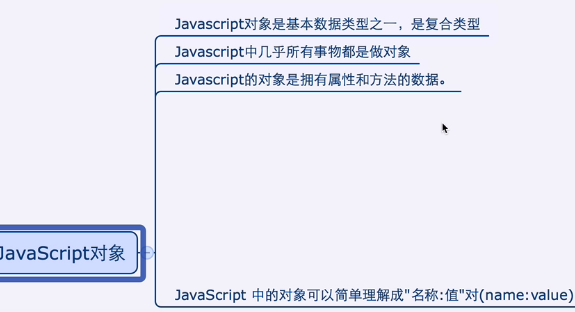
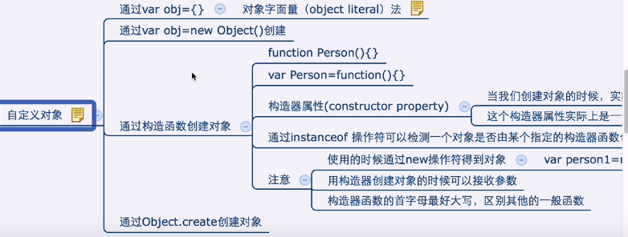
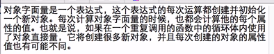
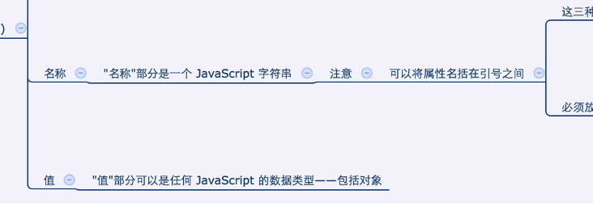
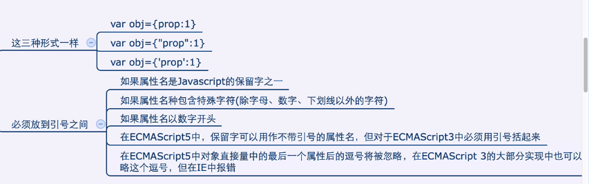
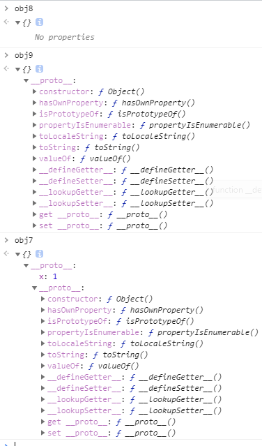

<!DOCTYPE html>
<html lang="en">
<head>
    <meta charset="UTF-8">
    <title>How to define an object</title>
</head>
<script type="text/javascript" src="../../DebugUtils.js"></script>
<body>
<script>
  p('');
  sep();
  b('JS对象与Java的HashMap相似');
  enhance('JS是基于原型的语言，没有class语句，把函数当作类');
  sep();
  b('自定义对象');
  p('');
  p('');
  sep();
  b('对象字面量创建对象，每调用一次就会创建一个新对象，即便是在for循环里');
  p('');
  p('');
  var obj = {};
  p(typeof obj); // object
  var obj1 = {x: 1, y: 2, z: 3};
  var obj2 = {
    'x': 1
  };
  var obj3 = {
    "x": 1
  };
  // 这三个是一样的
  var objj = {
    username: 'asd',
    'for': 'I am for',
    'for-s': 'I have -',
    obj: {
      name: 'obj'
    }
  }

  sep();
  b('通过new Object();');
  var obj4 = new Object();
  var arr = new Array();
  var date = new Date();
  var regex = new RegExp('js');
  sep();
  b('通过构造器函数，构造器函数首字母最好大写');
  function Constructor() {}
  var obj5 = new Constructor();

  function Constructor1(x, y) {
    this.x = x;
    this.y = y;
  }
  var obj6 = new Constructor1(5, 6);
  b('可通过instanceof 检测一个对象是否由某个指定的构造器函数创建');
  p(obj6 instanceof Constructor1); // true
  p(obj6 instanceof Constructor); // false
  p(date instanceof Date); // true

  b('通过Object.create()');
  var obj7 = Object.create({x: 1});
  b('var obj8 = Object.create(null); -> 创建原型对象，不会继承任何方法');
  var obj8 = Object.create(null);
  b('var obj9 = Object.create(Object.prototype); -> 创建普通的空对象')
  var obj9 = Object.create(Object.prototype);
  p('');

</script>
</body>
</html>